Robotics OEMs
Paid joint evaluation kits → design-in engineering → scheduled component supply. Proof: accepted tests, released design and production purchase orders.
MATTER POISE / INVESTOR PRESENTATIONA U.S. AI-driven hardware R&D
and manufacturing company.
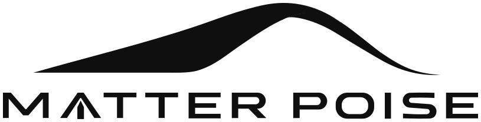
01 / MARKET36,766 robots ordered in North America.
+10.1% order value year over year.
17,995 robots ordered in North America.
+6.6% order value year over year.
A3 complete-robot order data. Different reporting periods; do not add them. These are not U.S.-only figures or MATTER POISE’s component TAM. Q2 2026 non-automotive share: 56% of units.
Paid joint evaluation kits → design-in engineering → scheduled component supply. Proof: accepted tests, released design and production purchase orders.
Hand / arm development rigs, spares and integration support. Proof: an accepted experimental workflow and repeat purchases.
Configured subsystems with a stable BOM and support boundary. Proof: site acceptance and replication across applications.
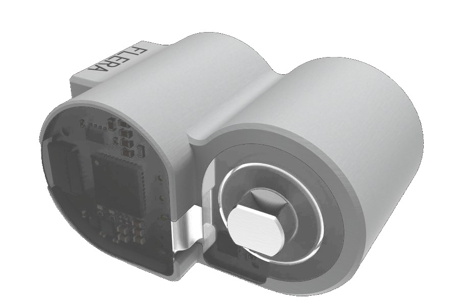
MICRO DRIVE FAMILYFinger and end-effector architectures.
~$100 per module
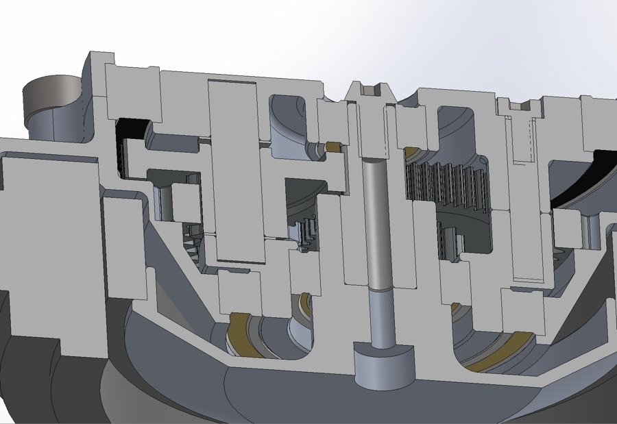
LARGE JOINT FAMILYJoints for arms and larger mechanisms.
~$150–500 per module
Management-provided component budget inputs, not audited costs or selling prices. Self-developed module design can incorporate purchased motors and chips. Production maturity varies by SKU.

A wheel-leg platform built around modular joints, motion control and Jetson Orin compute.

Miniature drives, replaceable fingers and documented interfaces for manipulation research and OEM integration.

An enclosed drive and stabilization architecture with an AGX compute budget for sensing and autonomy development.

Two seven-axis arms with a shared control and manufacturing architecture; configurable end effectors.
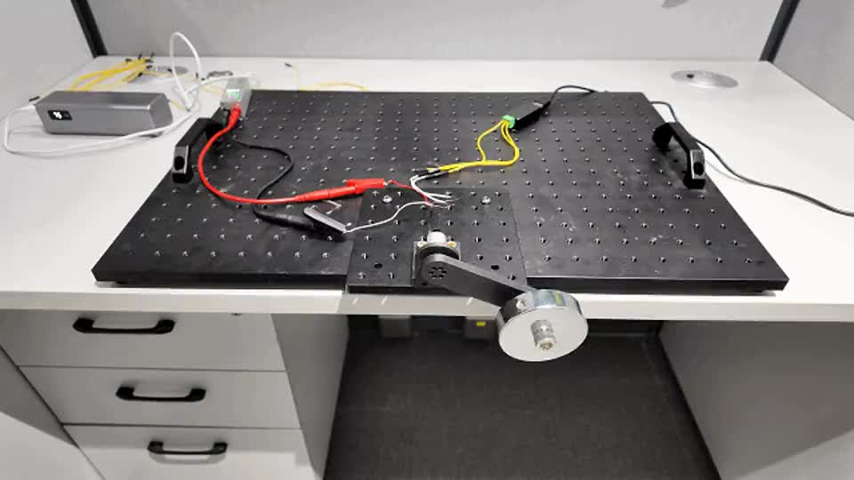
Prototype test
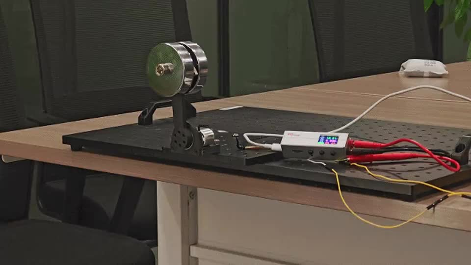
Prototype test
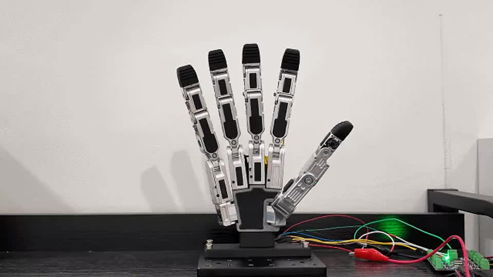
Prototype demonstration
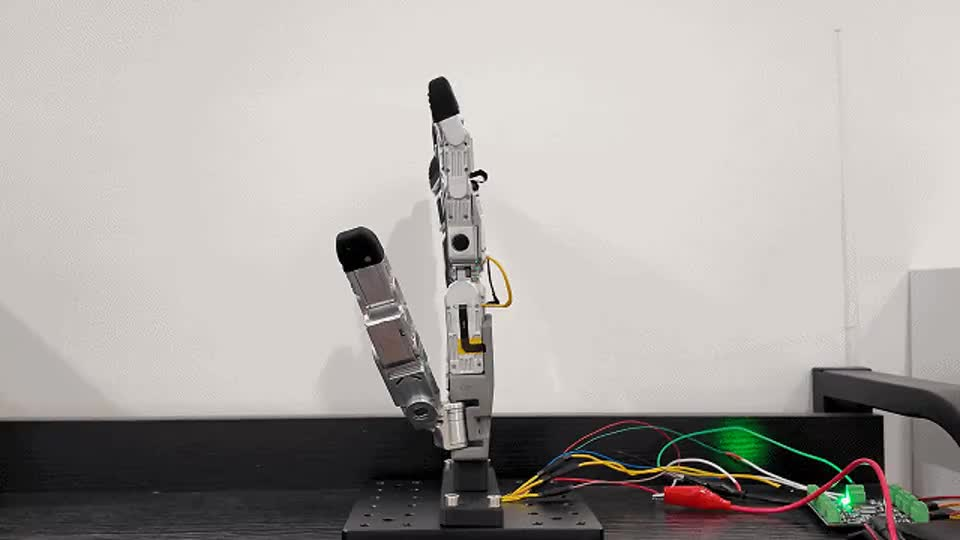
Prototype demonstration
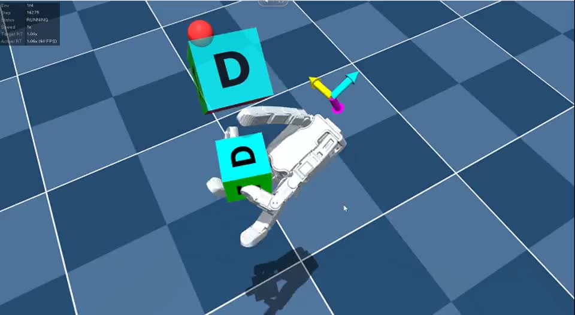
Simulation
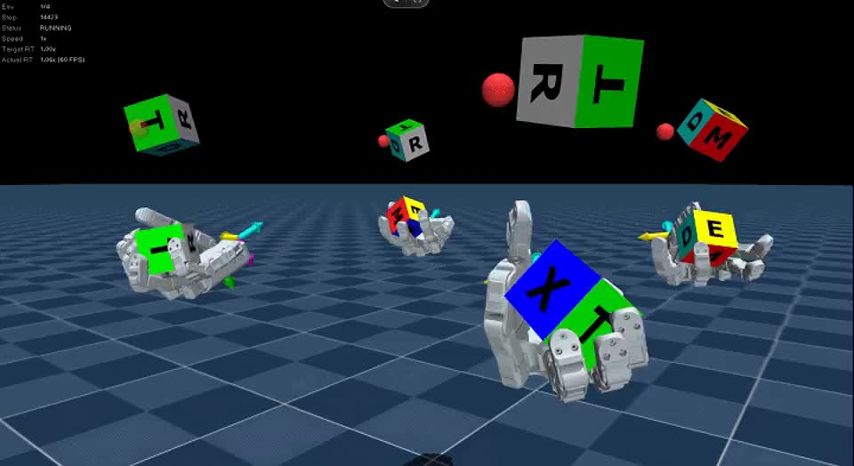
Simulation

Component budget, not selling price.
AI-assisted architecture illustration; not released CAD.
| Component group | Budget / USD | Share* |
|---|---|---|
| Large joint modules | ~$1,800–$6,000 | ~49% |
| Orin NX 16GB · production module | ~$999 | ~13% |
| Compute integration | ~$150–$300 | ~3% |
| CNC structures | ~$800 | ~10% |
| Motion-control hardware | ~$500 | ~6% |
| Four wheel drives | ~$320–$600 | ~6% |
| Battery / BMS | ~$350–$700 | ~7% |
| Sensing | ~$200–$600 | ~5% |
| Harness / connectors | ~$100–$200 | ~2% |
*Midpoint shares, rounded. No origin qualification is inferred.
Planning configuration: 12 leg joints plus 4 separate wheel drives. Verify the released 16-axis configuration; wheel motors are not counted twice.

Component budget, not selling price.
AI-assisted architecture illustration; not released CAD.
| Component group | Budget / USD | Share* |
|---|---|---|
| Micro drive modules | ~$2,000 | ~71% |
| Finger / palm structures | ~$200–$400 | ~11% |
| Control electronics | ~$100–$200 | ~5% |
| Tactile / force sensing | ~$150–$450 | ~11% |
| Wrist / harness | ~$50–$100 | ~3% |
*Midpoint shares, rounded. No origin qualification is inferred.
Planning configuration: one hand with 20 independently driven joints at ~$100 each. Actuator count is an assumption, not inferred from DOF alone. External host excluded.
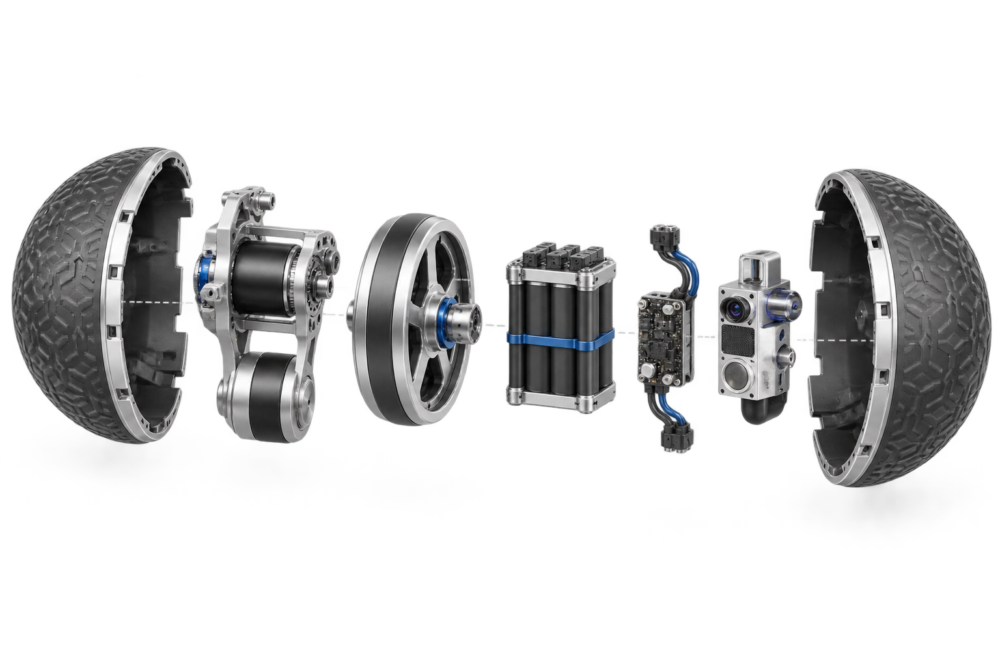
Component budget, not selling price.
AI-assisted architecture illustration; not released CAD.
| Component group | Budget / USD | Share* |
|---|---|---|
| AGX Orin 64GB · developer kit | ~$3,499 | ~41% |
| Compute integration | ~$50–$150 | ~1% |
| Shell / chassis | ~$800–$1,500 | ~13% |
| Pendulum drive package | ~$600–$1,200 | ~10% |
| Flywheel / stabilization | ~$300–$700 | ~6% |
| Battery / BMS | ~$800–$1,400 | ~13% |
| Motion / power control | ~$400–$700 | ~6% |
| Sensing | ~$300–$800 | ~6% |
| Harness / seals | ~$150–$300 | ~3% |
*Midpoint shares, rounded. No origin qualification is inferred.
AGX family specified by management; AGX Orin 64GB is the modeling assumption. Drive packages use budget allowances until motor count, power and supplier quotes are frozen.

Component budget, not selling price.
AI-assisted architecture illustration; not released CAD.
| Component group | Budget / USD | Share* |
|---|---|---|
| Large joint modules | ~$2,100–$7,000 | ~32% |
| Micro drive modules | ~$4,000 | ~28% |
| Orin NX 16GB · production module | ~$999 | ~7% |
| Compute integration | ~$150–$300 | ~2% |
| Two hands: non-drive parts | ~$1,000–$2,300 | ~12% |
| Arm links / base | ~$700–$1,400 | ~7% |
| Motion-control hardware | ~$500–$800 | ~5% |
| Power supply | ~$200–$400 | ~2% |
| Sensing | ~$300–$700 | ~4% |
| Harness / connectors | ~$150–$300 | ~2% |
*Midpoint shares, rounded. No origin qualification is inferred.
Planning configuration: 14 arm joints + two 20-drive hands. Micro drives and hand structures are separate lines; no complete-hand cost is added again.
Component budget excludes end-product assembly, test labor, yield loss, freight, duties, tax, warranty and operating expense. Validate landed COGS before setting margin.
A U.S. supplier invoice or U.S. brand does not prove domestic origin. Unknown origin stays foreign; direct components are counted once. Imported joints do not change origin through resale.
General domestic test: U.S. manufacture plus component cost exceeding 65% through 2028; exceeding 75% from 2029. Exceptions and FCC authorization need separate review.
Paid evaluation with an agreed acceptance test.
Released design, sourcing qualification and pilot acceptance.
Production POs, traceability, stable quality and spares support.
Paid workflow adoption and qualified U.S. production cells after 2027.
5 programs × 500 robots / year × 12 modules × $250 selling price
Illustrative steady-state scenario, not current revenue, forecast, booked pipeline or TAM. The selling-price assumption is separate from component cost. No whole-robot, software or engineering revenue is added to these units. Gross margin requires validated landed cost, yield and support expense.
Adjust the model on the website ↗Hardware qualification, paid evaluation kits, design wins and U.S. manufacturing partners. Gate: accepted pilots, repeat POs, costed BOMs and origin records.
Commercialize ROSE workflows and dedicated U.S. assembly, calibration and test cells. Gate: paid workflow acceptance, stable yield and justified capacity.
Lights-out operations and controlled recursive improvement. Gate: validated changes, rollback, traceability and unattended reliability.
Requirements → configuration → engineering review → tested prototype.
Output: design revisions, test results and acceptance record.DFM → supplier qualification → process control → accepted pilot.
Output: manufacturing package, traceable build records and release decision.An early prototype is reported by management. These workflows define the intended scope, not verified shipped functionality. Engineers approve design and manufacturing changes.
Qualify machining, assembly and pilot lots. Validate instructions, fixtures, acceptance tests and component records.
Bring critical assembly, calibration and test under direct process control when demand, yield and economics justify investment.
Automate stable repetitive tasks with monitoring, exception handling, recovery and traceability. Measure good-unit cost and reliability.
Apply the FCC’s defined advanced-robotic-device scope to each finished configuration. Fixed industrial arms and mobile systems need different analysis.
Validate the U.S. manufacturing path and qualifying component cost. U.S.-supplier purchasing share is not the same measure. Normal equipment authorization is separate.
Verify IP assignments, third-party licenses, U.S. filing strategy and product-specific FTO. Financing history and patent registration do not independently prove eligibility.
Meta’s ESP32-based Muse SDK is a technology reference, not an exemption or a guarantee of future policy. MATTER POISE regulatory approvals and completed FTO are not asserted.
September 2026 planning range.
Final round terms remain to be confirmed.
| Factory / production equipment | 20% · ~$2M |
| Team / operating runway | 30% · ~$3M |
| R&D / materials / transfer | 30% · ~$3M |
| Working capital / contingency | 20% · ~$2M |
At the lower end of the round, phase equipment and reserve use. Investor proof points: paid pilots, repeat orders, qualified BOMs, yield and accepted software workflows.
Management-reported patrol robotics experience.
Not MATTER POISE shipments or independently audited traction.
Joint architecture, compact mechanisms, drive electronics and complete system integration.
Supplier coordination, pilot builds, process transfer, quality and field delivery.
Firmware, sensing and motion control tied to mechanical and electrical design.
Reusable workflows, test records and controlled engineering changes.
A focused 30-minute investor session.
The website prepares an email meeting request. It does not confirm a calendar booking.